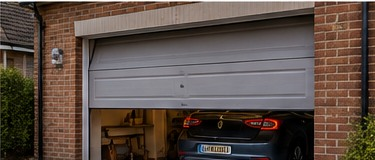
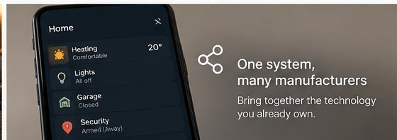

Lighting
Right light, right time
Motion, schedules and ambient conditions can produce different behaviour during the day and at night.
The best system is the one your family stops noticing because the house quietly does the sensible thing.
Motion, schedules and ambient conditions can produce different behaviour during the day and at night.
Blinds, lights and media can work as one routine while physical controls still work normally.

Alarm state, garage access, lighting and other systems can share the same understanding of whether you're home.

Existing products from different manufacturers can be brought into one coherent system.
Internet connections go down. Batteries run flat. Devices disappear from the network. Cloud services have outages. A useful smart home should cope gracefully when part of it stops working.
We think about failure modes when the system is designed: what should keep working, what can recover automatically and what straightforward manual route remains available.
Where the equipment allows it, essential controls and automations run locally within the home and continue without an internet connection.
Important equipment can be monitored for unexpected behaviour or disappearance, with automatic recovery where that is safe and appropriate.
Everyday functions such as lighting and heating should retain simple physical or manual controls so the house remains usable when automation is unavailable.
Recovery behaviour can be planned so equipment returns in a sensible state after an outage instead of relying on a collection of manufacturer defaults.
Some information is too messy for a simple sensor threshold. AI can interpret a camera image, describe an unusual energy pattern or turn hundreds of readings into a useful observation.
AI is particularly useful for interpretation, classification and explanation. Reliable home control stays with deterministic automation, so heating, lighting and security still behave predictably.
Turn a generic motion alert into a useful description of what is actually happening around the house.
Use live and historical power data to help identify unexpected loads, changing appliance behaviour and patterns worth investigating.
Combine information from different sensors and systems and describe situations that would otherwise require someone to study several dashboards.